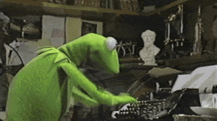

Kermit BOT
A multi-tool Discord robotWho is Kermit ?
Kermit is a Discord bot written in javascript using discord.jsThis was, is, and will be a small-project.
Even though i'll keep updating Kermit, that doesn't really mean this will be a serious thing.
I am offering 24/7 uptime for Kermit, and also weekly updates
If you got any suggestions for the bot, as an example, a system,
just write me an email! :-)
Kermit was made by Fabi#0018
